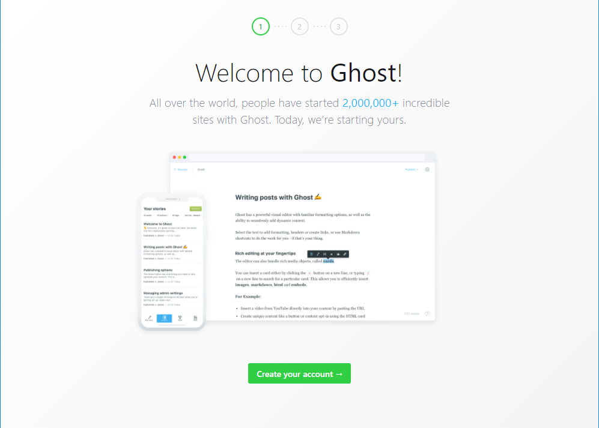
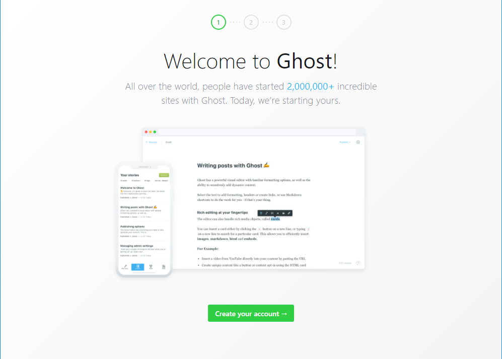

ИСР Тема 4. Подготовка виртуального сервера или деплой-платформы для публикации веб-ресурса на основе Ghost.js
Ghost.js можно установить с помощью Docker-контейнера.
Для установки контейнера необходимо выполнить команду:
Панель администратора доступна по адресу

Для установки контейнера необходимо выполнить команду:
docker pull ghost
docker run -d --name some-ghost -e url=http://localhost:3001 -p 3001:2368 ghost
server_ip:3001Панель администратора доступна по адресу
server_ip:3001/ghost